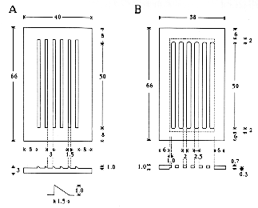
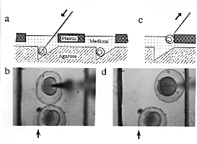

CHAPTER 5 - CELLULAR METHODS
(Source: E. Weinberg)
This is an easy method for holding embryos while injecting DNA, lineage tracer dyes, etc., without removing their chorions. The embryos are held in wedged-shaped troughs made with a plastic mold in 1.5% agarose. Each trough can hold approximately 35 embryos (with chorions). Embryos can be aligned by gently tamping them down with forceps. Agarose is useful because pipette tips generally will not break if they accidently touch the surface. As the pipette penetrates the chorion, the embryo is forced against the rear vertical wall of the trough. The exact positioning of the pipette tip within the embryo is achieved by slight movement of the pipette with a micromanipulator or by movement of the stage.
If the pipette tip is thin and long enough, it can be withdrawn from the chorion without dragging the embryo out of the trough. A problem with thin pipettes, however, is that they lack the tensile strength to penetrate the chorion and bend when forced onto the chorion surface. Thicker pipettes do not easily slip out of the chorion, although the embryo can be held with forceps as the pipette is slowly withdrawn.
Alternatively, a plastic cover can be used to impede the withdrawal of the embryo. The plastic cover fits snugly into the indentation in the agarose created by the plastic mold. The slits in the cover can be aligned with the somewhat narrower troughs in the agarose by sliding the cover from side to side. (The width of the cover is 2.0 mm less than that of the mold allowing one to achieve the desired position for injection.) The cover is 1.0 mm thick at the border, but only 0.7 mm thick between the openings so the embryos will slide off the pipette more readily.
Making the chambers
1. Pour approximately 20 ml of hot 1.5% agarose in embryo medium into a 100 x 15 Petri dish on a level surface. Wait until completely solidified.
2. Add an additional 20 ml of the 1.5% agarose to the dish. Set the plastic mold (teeth down) into the liquid agarose overlay, tapping to eliminate any bubbles.
3. After the agarose sets, add a small amount of medium, wrap the Petri dish in parafilm, and store in the refrigerator.
Injecting:
1. Warm the Petri dish to the temperature you prefer for injection (embryos can tolerate 18°C for about 1 hour, and the slower division rate allows more time to inject at the 1 and 2 cell stage).
2. Remove the plastic mold.
3. Position the dish on a microscope stage and adjust the angle of the pipette so that you can aim directly into the trough.
4. Transfer embryos into the troughs and set the plastic cover with slits into the depression in the agarose.
5. Using forceps, align the embryos all in the same orientation. Add enough culture medium so that the level reaches the plastic edges of the slits. Gently tamp the embryos down into the trough.
6. Using controls on the micromanipulator, force the pipette through the chorion and the yolk cell, entering the embryonic cell(s) from the yolk cell. (You might prefer to enter the embryonic cell directly; in this case, you would choose a different orientation of the embryo in the trough.)
7. As the pipette goes through the yolk, move the Petri dish a bit so that the pipette is close to the plastic cover.
8. Inject the desired volume of solution and then withdraw the pipette with a slow steady motion. The embryo will catch on the plastic cover and drop back into the trough.
9. Transfer the embryos into a dish with embryo medium and maintain at 28.5°C for further development.

Top view and cross-section of the plastic slot maker (A) and plastic cover piece (B). All dimensions are in mm. An enlarged view of a cross-section of the teeth is shown in the lower part of panel (A). The area within the dotted lines, in the diagram of the cover piece in panel (B), is 0.7 mm thick whereas the border area outside the dotted lines is 1.0 mm thick.

Schematic cross-sectional view of the injection set-up as an embryo is injected (a) and as the pipette is withdrawn (c), and top views of an actual embryo being injected (b) and as the pipette is withdrawn (d). Arrows in (a) and (c) indicate the direction of movement of the pipette. Arrows in (b) and (d) indicate the position of the vertical wall of the trough (the trough is difficult to see in the photograph because the agarose has low contrast; the two strong lines in each photograph are the edges of the slots).
The Zebrafish Book